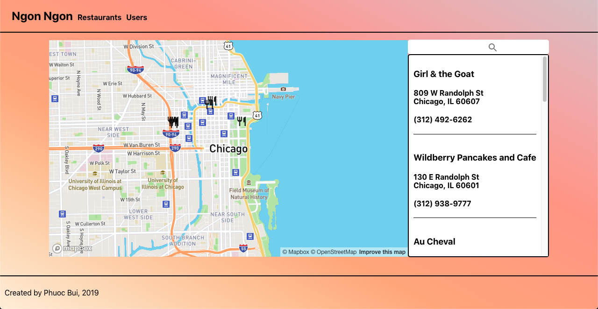

Hey Y'all

My name is Phuoc. I'm a former higher education professional turned coder poking around for opportunities. I graduated from Actualize where I learned Ruby, Ruby on Rails, Javascript, VueJS, and much more! I'm excited to use my newfound knowledge to tackle new languages and technologies to make practical tools to make life easier.
When I'm not working, I enjoy baking, trying new bakeries, and long walks in the grocery store to get more baking supplies. Below are some of my favorites.
House of Books
![Gif House of Book's search feature]](https://media.giphy.com/media/YSeTvY26YBwBY53Xlp/giphy.gif)

I built an application from as a part of a coding challenge that consumes the Google Books API. House of Books was built using React.JS and TDD principles via Jest and React-Testing-Library. Users are able to enter search terms and receive up to 40 search results. A user can then click on each individual result for a book description as well as further information about the book.
Things I Learned:
- CSS from scratch is TOUGH. There are so many times where I couldn't even begin to formulate my question for Google, but luckily with enough search terms, some solutions were found. Additionally, there are so many times where I assumed default behavior, which was incorrect.
- I need to balance being excited about new technology and understanding the current paradigm of usage, to best leverage the tools I'm being given.
- TDD is also TOUGH. That being said, I really do like React-Testing-Library, as its whole guiding principle is testing as how the user interacts with the software. I never thought I would have an opinion about these kind of things in a million years.
Chipi-Chipi
I made an application for users to create grocery lists and to track prices for the same grocery object (i.e. eggs, bread, milk) from a user-created grocery list across multiple stores. I started this project because I could never remember where eggs were the cheapest! I was able to incorporate a barcode scanner so users can scan in their favorite products. Utilized a Vue.JS frontend with a Rails backend.
Things I Learned:
- There are tons of different types of barcodes. The US and Europe don't even use the same type!
- A barcode scanner is only as effective as the camera being used
- The same object, like a gallon of milk, has a different barcode depending on the store
- Simple and beautiful design is so much harder than I ever imagined! Much respect to designers.
- This may seem obvious, but there's huge amounts of variability in the products offered at a grocery store! This creates an interesting problem to tackle as a developer - should items be listed price per ounce or price per item?
Lynxin
I worked on in a six person team for a week to recreate LinkedIn - but for cats. Lynxin included functionality for profile creation, including photo uploads, and a follower system. Used a Rails backend with a Vue.JS frontend. It was one of our first major larger team projects in the class!
Things I Learned:
- There's no pleasing everyone when deciding who works on what, but every opportunity can be a learning opportunity - even if it's learning that you don't like something.
- Design-wise, a ton of little flourishes add up to a really great looking product! I found it easy to overlook this fact when I was contributing.
- Having users associate to one another as followers and followees is a bit of a mind bender!
- This was more of a personal roadblock, but you need to have fun with your code. For me, that meant making strangely detailed or silly profiles for Catwoman (Michelle Pfeiffer) and Pusheen.
Who Gives A Sh*t?
Built application for users to rate public restrooms on various metrics including cleanliness, privacy, gender, amenities, etc. Included functionality to add, save, and review restrooms. As always, a Rails backend with a Vue.JS frontend
Things I Learned:
- First time incorporating Google Maps. It was a bit more challenging than we thought, but we got it in there!
- It's a strange feeling, but in a fun way, to get so lost in the minutiae of the product. Before you know it, you've been discussing what makes a great restroom and what you look for an ideal restroom for over an hour.
- There's never enough time to implement every single thing you want before a deadline - and that's okay! You still made something!
❮
❯
Current Projects
Gotta keep sharp on coding, so I decided to create some pet projects with specific learning objectives in mind. Feel free to look at a few below:
Ngon Ngon

This app's goal was to help me remember what I've ordered at restaurants and whether or not I've liked them because there's nothing quite like misremembering something and getting a dish you didn't like.
My current plans are to allow a user to rate and review a dish at a restaurant, add photos, and keep lists of restaurants they've visited, their favorites, and where they want to try next. I also want to incorporate data from MapBox or Yelp to help populate the database. I'm using Rails for the backend and React for the frontend.
Things I'm Trying to Learn:
-
I wanted more experience with React, so I'm doing this project in React. I also wanted to see if I could try utilizing more of the hooks that come along with React 16.8
-
Thus far, I've been relying a lot on Bootstrap for my CSS - so with this in particular, I wanted to see if I can utilize more handwritten CSS code instead of relying on Bootstrap. Not only will this help me learn more what each styling is doing, but also maybe fun tricks on how to use them along the way. Currently using styled-components to help my style all of my components in React.
-
One thing that my previous apps had in common was a lack of design. I am hoping to better my design work with the help of Material-UI, which helps with implementing Google's Material Design in React.
❮
❯
Give me a holler: